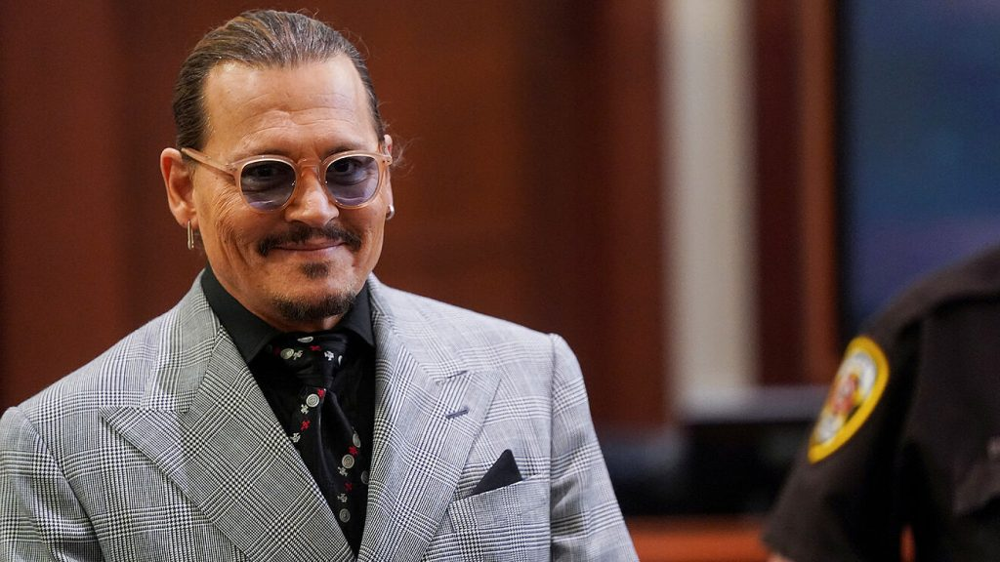

Rotten Slashers
NOTICIAS
Amazon Prime confirmó la cuarta temporada de The Boys
La plataforma de streaming, Amazon Prime Video, confirmó que la producción de The Boys tendrá una cuarta entrega.
Amazon Prime Video sigue apostando por su caballo de batalla. The Boys tendrá una cuarta temporada, tras la explosión en la audiencia que generó el estreno de la tercera. La plataforma indicó que las visualizaciones crecieron un +17% respecto a la segunda temporada, y un +234% respecto a la primera.

Por su parte, Vernon Sanders, director de televisión global de Amazon Studios dijo: “The Boys continúa empujando los límites en la narración de historias. Mientras tanto, también entretiene sin descanso y enhebra una sátira social que se siente demasiado real. Este mundo estilizado de la serie tiene un alcance global increíble. La audiencia del pasado fin de semana es una buena prueba de ello. Estamos inmensamente orgullosos del reparto y el equipo. Han generado una franquicia para Prime Video”. Por el momento se desconoce cuándo comenzarán las grabaciones de la cuarta temporada. Los fans esperan que la espera no sea tan larga como sucedió entre la segunda y tercera entrega.
La condición que puso Johnny Depp para renunciar a los 10 millones de Amber Heard

Tras el veredicto del juicio a favor de Johnny Depp, se sabe cuál es la condición del actor para renunciar a la plata de indemnización.
El juicio de Johnny Depp y Amber Heard terminó hace muy poco y el veredicto favoreció a Depp. Su exmujer deberá pagarle 15 millones de dólares, 10 por daños compensatorios y 5 por daños punitivos; Heard recibirá 2 millones por su contrademanda. Pero, la jueza dispuso que el actor, finalmente, sólo recibirá 10 millones.
“Obviamente no podemos revelar ninguna comunicación abogado-cliente, pero como testificó Depp, y como ambos dejamos en claro en nuestros respectivos cierres, nunca se trató de dinero para él. Se trataba de restaurar su reputación, y lo hizo”, explicó. El conductor dejó entreabierta la posibilidad de que todo se podría “solucionar” si se retractara la actriz.